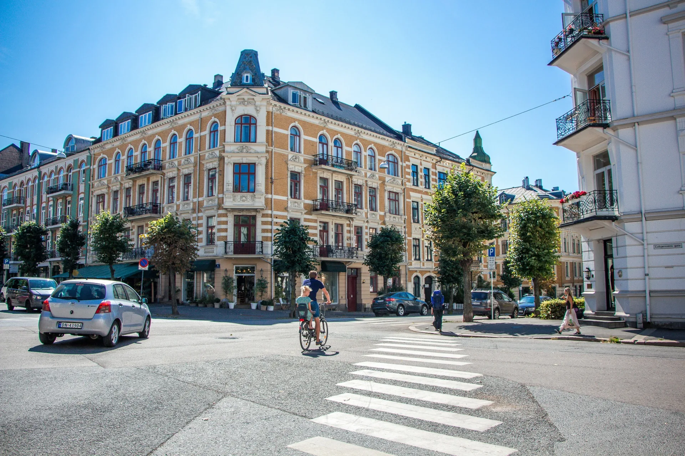

Short answer: yes — Oslo is one of the better European capitals to explore by bike, and it has become noticeably better over the last decade. But "good for cycling" means different things to a nervous first-timer, a family with kids, and a rider who wants to disappear into the forest for a day. Here's the honest version, from people who ride these roads and trails year-round.
Oslo's city centre is now largely calm for cyclists. Car traffic through the core has been deliberately reduced, the waterfront is essentially car-free, and there's a genuine network of dedicated cycle lanes connecting the main sights. Add a compact centre — you can ride from the Opera House to Vigeland Park in well under half an hour — and you have a city that rewards two wheels more than four.
It isn't flat, and the weather has opinions. Neither is a real obstacle once you know what to expect, and both are covered below.
A near-traffic-free centre. Oslo has spent years pulling private cars out of the city core. The result is quiet downtown streets, a harbour promenade reserved for people on foot and on bikes, and far less of the stop-start stress that makes cycling in many capitals unpleasant.
Real, connected infrastructure. This isn't a token painted line here and there. Dedicated cycle paths link the waterfront, the parks and most major landmarks, so you can string together a proper sightseeing loop without fighting for road space.
Green space everywhere. Few cities let you go from a downtown boulevard to a forest lake in the same ride. Oslo does. The Marka forest wraps around the city to the north, and you can be on quiet gravel among pine and birch within half an hour of the centre.
Scenery that earns the effort. The fjord on one side, forested hills on the other, and a skyline of bold modern architecture in between. The riding is the sightseeing here — you're not just getting from A to B.
It's hilly. Oslo rises from the fjord up into the hills, so almost any ride away from the waterfront involves some climbing. For the city-highlights loop this is minor — a gentle pull up to the Royal Palace and little else. For anything heading north or inland, expect real gradients. The fix is simple: pick a route that matches your fitness, or ride an e-bike, which flattens the whole city out and is by far the most popular choice for visitors.
The weather is changeable. Oslo cycling is excellent from May through September, with long, bright summer evenings that are arguably the best time of all to ride. Spring and autumn are perfectly rideable with a light layer. Winter is for the committed — the city does keep cycling, but on proper tyres and with experience. The honest advice: come prepared for a passing shower even in summer, and you'll rarely be caught out.
Navigation takes a little local knowledge. The infrastructure is good but not always obvious — the best route between two points is sometimes a quiet back street or a path along the river rather than the main road. This is the one drawback that's hardest to solve from a guidebook, and it's exactly where riding with someone who knows the city pays off.
Broadly, yes. The combination of low city-centre traffic, separated cycle paths and drivers who are used to bikes makes Oslo comparatively low-stress. As anywhere, the busier arterial roads demand more attention, and winter conditions change the picture entirely. For first-time visitors, sticking to the centre, the waterfront and the park routes keeps you almost entirely on calm, protected ground.
No. Bikes are easy to hire in Oslo, and for visitors an e-bike in particular takes the city's hills out of the equation. If you're planning to ride the forest, a proper gravel bike is the tool for the job — you can rent a gravel bike in Oslo from NOK 899 with pickup at Sognsvann right on the forest edge, or book a guided tour with the bike included. The main thing is to match the bike to the route — a city bike is wrong for the Marka, and full off-road geometry is overkill for the waterfront.
If you only have a day or two and want to actually see the city rather than spend it staring at a map, a guided tour solves the two real drawbacks above at once: someone else handles the navigation and the right route for your fitness, and the bike — e-bike or gravel — is sorted for you. Our tours start with pickup directly at your hotel, so there's no meeting point to find and no wrong turns to take. You just ride.
We run eight private tours, from a relaxed city-highlights loop for first-timers to gravel routes deep into the Marka forest — including the Epic Marka Endurance for riders who want a full day in the wilderness — plus specialist coffee and architecture rides for those who want something more particular. Every tour is private, small, and shaped around your pace.
Eight private guided tours — city highlights, forest gravel and everything in between. Hotel pickup included, bikes provided.
See all private toursYes. The city centre is largely car-free, there's a connected network of dedicated cycle paths, and drivers are accustomed to cyclists. It's one of the more relaxed European capitals to ride in, especially around the waterfront and parks.
The waterfront and city-centre routes are flat and easy. Rides heading inland or into the forest involve real climbs, but an e-bike makes the whole city comfortable for riders of any fitness level.
May to September is ideal, with long, light summer evenings being a particular highlight. Spring and autumn are rideable with a light layer; winter cycling is for experienced riders on proper equipment.
Generally yes — low city-centre traffic and separated cycle paths make it comparatively low-stress. Busier roads and winter conditions call for more care, but the central and park routes are calm and well protected.